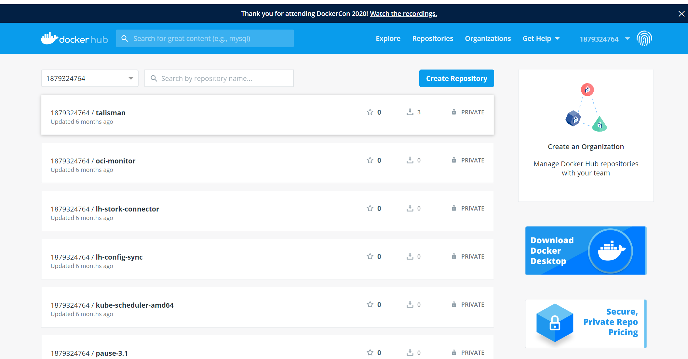

Contents
访问Docker仓库¶
Docker Hub公共镜像市场¶
Docker Hub是Docker官方提供的最大的公共镜像仓库，目前包括了超过100 000的镜像，地址为https://hub.docker.com 。大部分对镜像的需求，都可以通过在Docker Hub中直接下载镜像来实现。
如图：

1登录¶
可以通过命令行执行docker login命令来输入用户名、密码和邮箱来完成注册和登录。注册成功后，本地用户目录下会自动创建.docker/config.json文件，保存用户的认证信息。
登录成功的用户可以上传个人制作的镜像到Docker Hub。
#执行docker login命令来输入用户名、密码和邮箱来完成注册和登录
[root@iZ2ze38chylj63vuj6fqiaZ ~]# docker login
Login with your Docker ID to push and pull images from Docker Hub. If you don\'t have a Docker ID, head over to https://hub.docker.com to create one.
Username (1879324764): 1879324764
Password:
Login Succeeded
2.基本操作¶
#用户无需登录即可通过docker search命令来查找官方仓库中的镜像，并利用docker pull命令来将它下载到本地。
搜索镜像
[root@iZ2ze38chylj63vuj6fqiaZ ~]# docker search centos
NAME DESCRIPTION STARS OFFICIAL AUTOMATED
centos The official build of CentOS. 2507 [OK]
ansible/centos7-ansible Ansible on Centos7 82 [OK]
jdeathe/centos-ssh CentOS-6 6.8 x86_64 / CentOS-7 7.2.1511 x8... 27 [OK]
nimmis/java-centos This is docker images of CentOS 7 with dif... 13 [OK]
million12/centos-supervisor Base CentOS-7 with supervisord launcher, h... 12 [OK]
根据是否为官方提供，可将这些镜像资源分为两类：
·一种是类似于centos这样的基础镜像，也称为根镜像。这些镜像是由Docker公司创建、验证、支持、提供，这样的镜像往往使用单个单词作为名字；
·另一种类型的镜像，比如ansible/centos7-ansible镜像，是由Docker用户ansible创建并维护的，带有用户名称为前缀，表明是某用户下的某仓库。可以通过用户名称前缀“user_name/镜像名”来指定使用某个用户提供的镜像。
下载官方centos镜像到本地，代码如下所示
下载镜像
[root@iZ2ze38chylj63vuj6fqiaZ ~]# docker pull centos
[root@iZ2ze38chylj63vuj6fqiaZ ~]# docker images
docker.io/centos latest 9f38484d220f 2 months ago 202 MB
上传镜像
#注意tag名称不要太长，长度太长会失败。
# 报错如下：denied: requested access to the resource is denied
[root@iZ2ze38chylj63vuj6fqiaZ ~]# docker tag centos:latest 1879324764/centos_test:latest
[root@iZ2ze38chylj63vuj6fqiaZ ~]# docker push 1879324764/centos_test:latest
3.自动创建¶
自动创建（Automated Builds）是Docker Hub提供的自动化服务，这一功能可以自动跟随项目代码的变更而重新构建镜像。
例如，用户构建了某应用镜像，如果应用发布新版本，用户需要手动更新镜像。而自动创建则允许用户通过Docker Hub指定跟踪一个目标网站（目前支持GitHub或BitBucket）上的项目，一旦项目发生新的提交，则自动执行创建。
要配置自动创建，包括如下的步骤：
1）创建并登录Docker Hub，以及目标网站如Github；
2）在目标网站中允许Docker Hub访问服务；
3）在Docker Hub中配置一个“自动创建”类型的项目；
4）选取一个目标网站中的项目（需要含Dockerfile）和分支；
5）指定Dockerfile的位置，并提交创建。
之后，可以在Docker Hub的“自动创建”页面中跟踪每次创建的状态。
第三方镜像市场¶
国内不少云服务商都提供了Docker镜像市场，包括
国内比较有名的镜像源仓库：
阿里云：https://cr.console.aliyun.com/cn-beijing/instances/images
道云：DaoCloud: https://hub.daocloud.io/
网易云
.......
时速云
.......
下面以时速云为例，介绍如何使用这些市场。
1.查看镜像
访问https://hub.tenxcloud.com ，即可看到已存在的仓库和存储的镜像，包括Ubuntu、Java、Mongo、MySQL、Nginx等热门仓库和镜像。时速云官方仓库中的镜像会保持与DockerHub中官方镜像的同步。
以MongoDB仓库为例，其中包括了2.6、3.0和3.2等镜像。
下载镜像¶
#下载镜像也是使用docker pull命令，但是要在镜像名称前添加注册服务器的具体地址。
[root@iZ2ze38chylj63vuj6fqiaZ ~]# docker pull daocloud.io/library/nginx:1.13.0-alpine
#通过docker images命令来查看下载到本地的镜像
[root@iZ2ze38chylj63vuj6fqiaZ ~]# docker images
daocloud.io/library/nginx 1.13.0-alpine f00ab1b3ac6d 2 years ago 15.5 MB
#更新镜像标签
[root@iZ2ze38chylj63vuj6fqiaZ ~]# docker tag daocloud.io/library/nginx:1.13.0-alpine nginx:1.13.0
[root@iZ2ze38chylj63vuj6fqiaZ ~]# docker ps -a
daocloud.io/library/nginx 1.13.0-alpine f00ab1b3ac6d 2 years ago 15.5 MB
nginx 1.13.0 f00ab1b3ac6d 2 years ago 15.5 MB
# 运行nginx容器
[root@iZ2ze38chylj63vuj6fqiaZ ~]# docker run --name nginx_hu -d -p 8080:80 nginx:1.13.0
eea29a2e03329b026bc623da2f12ac4bc0da8a38755b5f570a3e50b60584f472
[root@iZ2ze38chylj63vuj6fqiaZ ~]# docker ps
CONTAINER ID IMAGE COMMAND CREATED STATUS PORTS NAMES
eea29a2e0332 nginx:1.13.0 "nginx -g 'daemon ..." 3 seconds ago Up 2 seconds 0.0.0.0:8080->80/tcp nginx_hu
#暴露端口
docker run --name 新名称 -d -p 8080:80 some-content-nginx